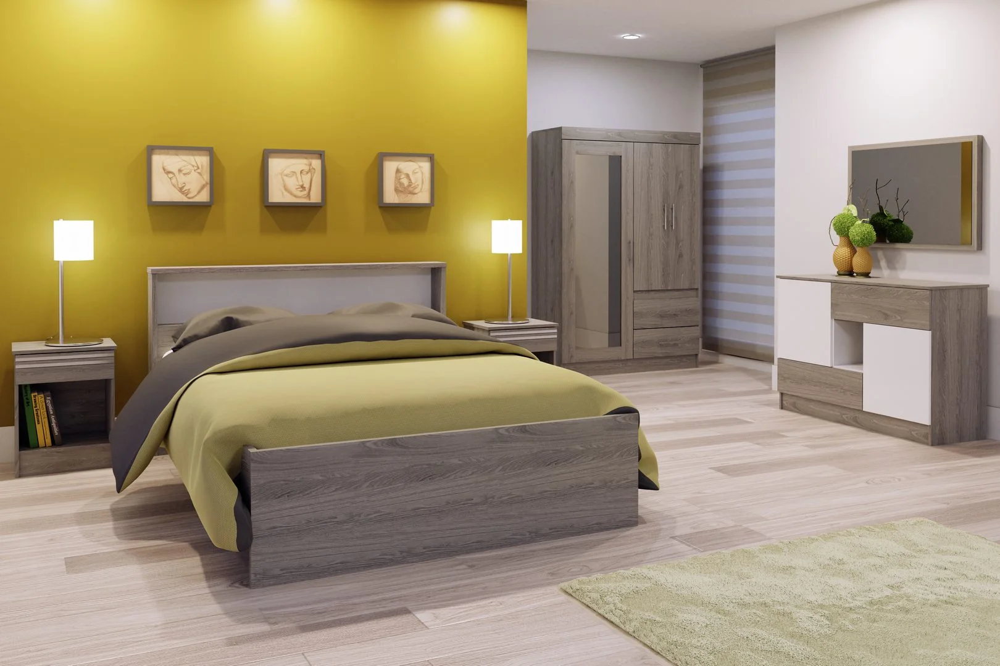
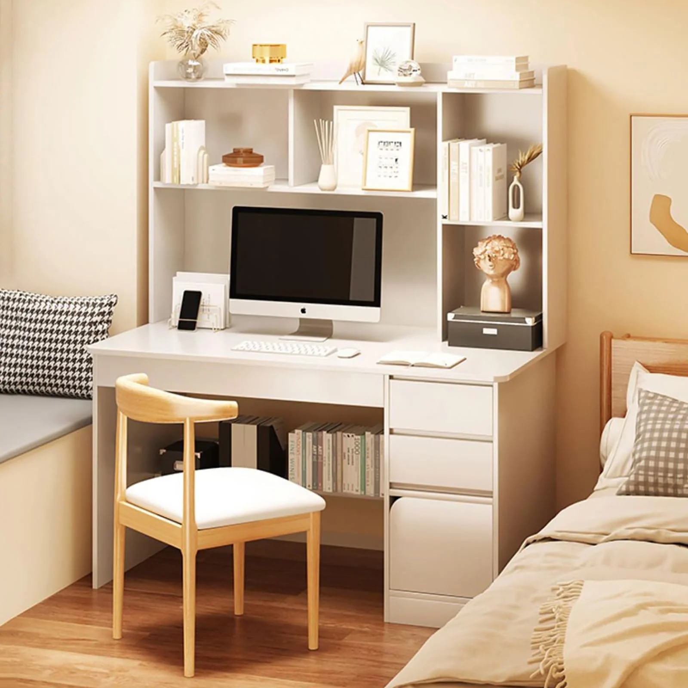

5 claves para elegir las mejores sillas de comedor modernas

Aquí te van algunos consejos para seleccionar las sillas de
comedor modernas más adecuadas:
El comedor es un espacio central en cualquier hogar, donde la
familia y amigos se reúnen para disfrutar de momentos
entrañables alrededor de la mesa. Es crucial seleccionar las
sillas adecuadas que brinden comodidad y complementen la
decoración. Aquí te ofrecemos valiosos consejos para elegir
las sillas de comedor modernas que se adapten perfectamente a
tus necesidades y estilo, garantizando así una experiencia
placentera en cada comida compartida.
Variedad de opciones
Las opciones son infinitas: desde materiales como madera,
metal, cuerina, acero, hasta diseños clásicos, vintage o
modernos. Al elegir, considera la frecuencia de uso y busca un
equilibrio entre diseño y comodidad.
Comodidad vs estilo
Si el comedor se utiliza frecuentemente, prioriza la comodidad
sobre el diseño. Para ocasiones especiales, puedes optar por
modelos más llamativos, aunque menos cómodos. Encuentra el
equilibrio perfecto entre ambos.
Medidas adecuadas
Considera las dimensiones de tu espacio y de la mesa. No
amontones demasiadas sillas, ya que esto puede resultar
incómodo y afectar la estética. Busca sillas con medidas
estándar que mantengan un ángulo recto con el suelo.
Combinación de estilos
Mezclar sillas de diferentes estilos, diseños, materiales e
incluso colores es una tendencia actual que añade frescura y
personalidad al comedor. Mantén la armonía mediante el uso de
tonos similares o contrastes suaves.
Combinación con la mesa
Puedes combinar estilos de sillas con la mesa para crear un
ambiente moderno y fresco. Desde mesas clásicas con sillas
industriales hasta conjuntos más uniformes para un look
elegante y sobrio.
¿Cómo elegir los mejores muebles para dormitorios modernos?

El dormitorio es el espacio más importante de nuestros
hogares. Es donde pasamos la mayor parte del tiempo,
encontrando refugio y descanso tras días agotadores. Decorar
esta habitación y elegir los muebles adecuados es crucial para
asegurar un sueño reparador, que beneficia nuestra salud y
bienestar emocional. A continuación, te presentamos consejos
para seleccionar los mejores muebles para dormitorios
modernos.
Observación del espacio
Antes de elegir los muebles para tu dormitorio, es fundamental
considerar el tamaño de la habitación y las necesidades
específicas. El mobiliario variará según si es para una
pareja, adolescentes o niños. En espacios reducidos, como
habitaciones de 9 a 10 m², se recomienda una cama, ropero,
veladores, mesas de noche y quizás un pequeño escritorio. Para
habitaciones más amplias, puedes incluir una cómoda grande, un
armario grande, una cama queen o king size, y un par de mesas
de noche. Es importante evitar sobrecargar el espacio
visualmente para mantener una estética agradable.
Muebles esenciales
Los elementos imprescindibles en un dormitorio incluyen la
cama, mesas de noche, cómoda, tocador, sillones y percheros.
La cantidad de muebles dependerá del espacio disponible.
Importancia de la cama
La cama es el centro de atención de la habitación y determina
el estilo y tamaño de los demás muebles. Es crucial elegir una
cama que se ajuste al espacio disponible para garantizar la
comodidad y la movilidad en la habitación.
Cabeceras decorativas
Las cabeceras no solo añaden un toque estético moderno a la
habitación, sino que también ofrecen funcionalidad al evitar
que la cabeza toque la pared y los cojines se deslicen. Una
cabecera tapizada puede proporcionar un aspecto elegante
adicional.
Mesas de noche
A menudo pasadas por alto, las mesas de noche son elementos
funcionales que ofrecen espacio de almacenamiento y
contribuyen a la armonía visual de la cama.
Estilos de muebles
La elección del estilo de los muebles depende de las
preferencias personales. Puedes optar por conjuntos uniformes
o mezclar diferentes estilos y colores para crear una estética
única. Los materiales como la madera, el metal o la melamina
también pueden variar según tus gustos y necesidades.
Selección de colores
Los colores de los muebles pueden influir en el estilo general
de la habitación. Desde tonos metalizados e industriales para
un estilo moderno, hasta colores pastel para una apariencia
más suave y relajante, y tonos terrosos para un ambiente más
cálido y maduro.
5 consejos para elegir los mejores modelos de cómodas

Las cómodas son muebles esenciales en cualquier hogar, ya que
nos permiten mantener el orden y almacenar prendas y ropa de
cama. Son ideales para aprovechar el espacio en nuestro
dormitorio y, además de ser funcionales, también agregan un
toque decorativo único y moderno. A la hora de elegir la
adecuada, hay muchas variables a considerar. A continuación,
te ofrecemos consejos para seleccionar los mejores modelos de
cómodas. ¡Descúbrelos!
Ubicación y funcionalidad
La ubicación de una cómoda puede variar según su uso y
funcionalidad. En el dormitorio, añade modernidad y orden al
espacio, siendo ideal para almacenar prendas y ropa de cama.
En la cocina, ofrece un estilo único y optimiza el
almacenamiento del menaje y manteles. En la sala, aporta
elegancia y sirve como elemento decorativo, especialmente si
se coloca una lámpara encima.
Tamaño y medidas
Es crucial considerar el tamaño y las medidas de la cómoda
para asegurar que se ajuste al espacio disponible y permita
una circulación fluida en la habitación. En dormitorios
pequeños, se recomiendan cómodas bajas para ampliar
visualmente el espacio, mientras que en espacios más amplios,
una cómoda a la altura del pecho puede ser una opción ideal.
Además, es importante dejar un margen de aproximadamente 25 cm
al abrir los cajones para garantizar una movilidad sin
obstáculos.
Colores
La elección del color de la cómoda depende del ambiente y del
estilo deseado. Para dormitorios de adultos, el blanco
transmite tranquilidad y luminosidad, mientras que para
habitaciones infantiles, colores vivos y llamativos crean un
ambiente alegre y acogedor.
Material
El material de la cómoda influye en su durabilidad,
mantenimiento y estilo. Las cómodas de madera destacan por su
calidad y acabados elegantes, las de metal ofrecen un estilo
moderno y resistencia, y las de melamina son una opción
versátil, liviana y de fácil limpieza.
Estilo
Hay una amplia variedad de estilos de cómodas, desde clásicas
hasta modernas, rústicas o industriales. Es importante elegir
un estilo que se adapte a la decoración y necesidades de cada
ambiente. En Promart.pe, encontrarás una gran variedad de
modelos a precios accesibles para que encuentres la cómoda
perfecta para ti. ¡Descúbrelas ahora mismo!
5 tips para escoger los mejores escritorios modernos

Hoy en día, los escritorios son esenciales en nuestros hogares
debido al trabajo desde casa y el estudio remoto. ¿Qué modelo
escoger? Los escritorios de melamina son una excelente opción.
En Promart.pe, te ofrecemos consejos para elegir escritorios
modernos que se ajusten a tus necesidades y te brinden
comodidad y productividad en casa.
Tipo de trabajo y uso
Elige el escritorio en función del tipo de trabajo y uso que
le darás. Considera si necesitas mucho espacio para trabajar o
simplemente una superficie para tu laptop. Un escritorio
rectangular puede ser ideal para tareas básicas, mientras que
uno en forma de L ofrece más almacenamiento para documentos y
papeles.
Espacio disponible
Antes de comprar, mide el espacio disponible para el
escritorio. Asegúrate de que se ajuste correctamente y permita
una buena circulación por la habitación, manteniendo la
armonía con otras piezas de mobiliario.
Forma del escritorio
La forma del escritorio también es importante. Un diseño
rectangular es clásico y versátil, mientras que uno en forma
de L ofrece más espacio de trabajo y almacenamiento. Elige el
que mejor se adapte a tus necesidades y al espacio disponible.
Tonalidad del escritorio
La tonalidad del escritorio influye en la estética y la
productividad del espacio de trabajo. Colores como marrón,
gris o blanco pueden transmitir armonía y mejorar el
rendimiento laboral. Elige el color que te resulte más
inspirador y agradable.
Materiales
Los materiales del escritorio también son importantes. La
madera ofrece calidad, diseño y resistencia, mientras que la
melamina es una opción económica con buena durabilidad. Los
escritorios de vidrio son modernos y fáciles de limpiar. Elige
el material que mejor se adapte a tus preferencias y
presupuesto.